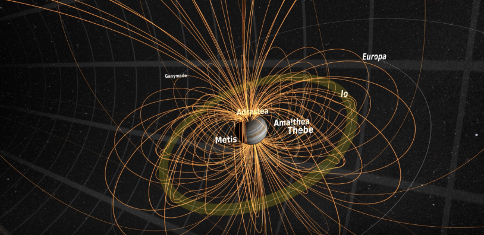

..

.....

....

...

this is a personal research project with the purpose of discovering and expanding knowledge about the relationship between Jupiter and its moon Io, and to corroborate evidence about radio wave producing Io storms that reflect specific rotations along Io’s orbit, relationship with other moons, and Jupiter’s strong magnetic field. It also highlights the ability of simple radio telescopes to capture such events and the specific ability of antennas to capture particular events based on beam width and location of the dipole relative to the central meridian longitude (CML) of both Jupiter and Io.